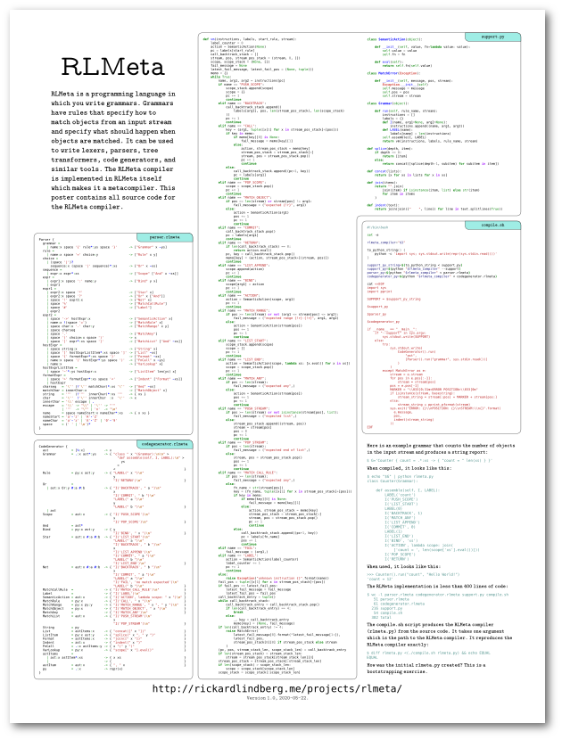
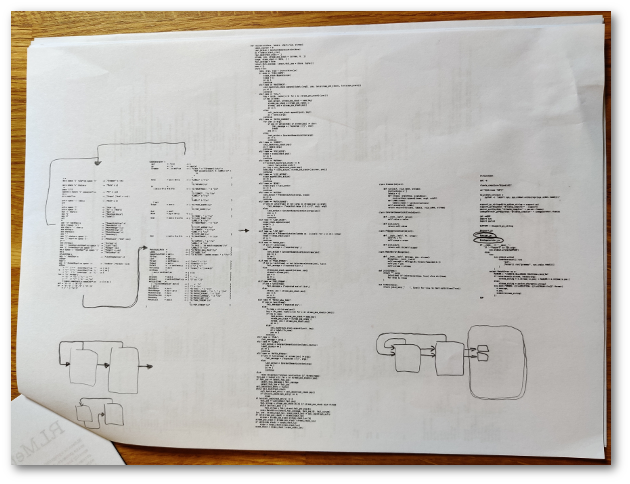
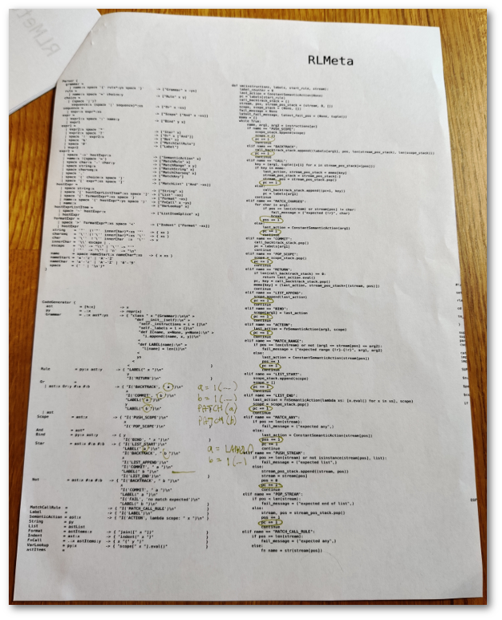
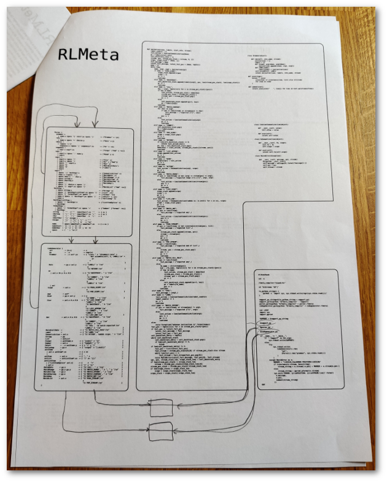
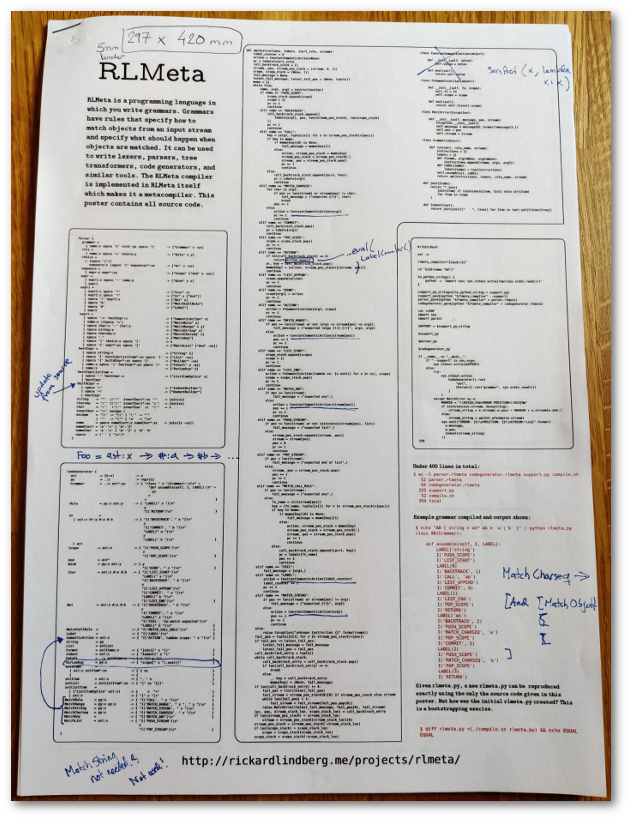
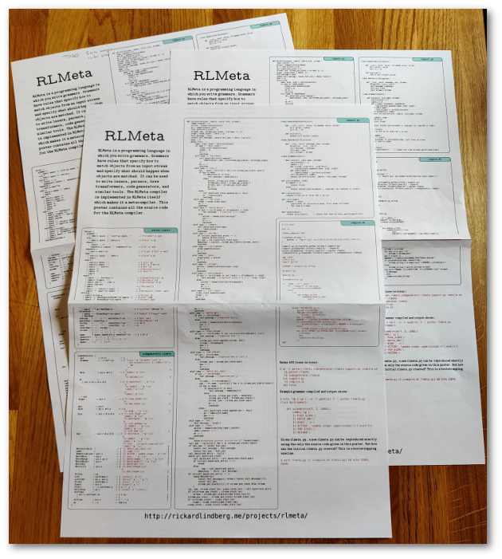
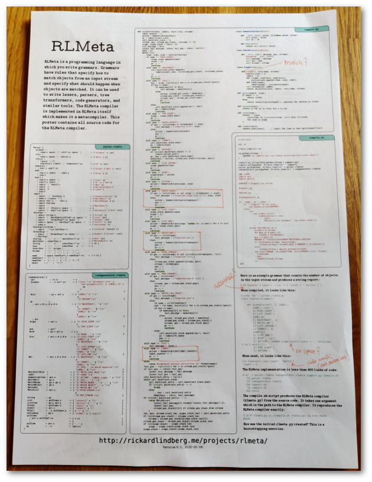
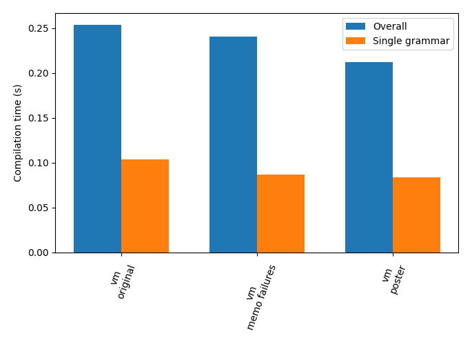

Creating the RLMeta poster
Published on 24 May 2020.
RLMeta is the most interesting program I've written. I find the grammar syntax beautiful to read and the meta-approach intriguing. To me, it approaches art. I wanted to showcase it by putting the whole implementation on a poster. Here is a preview:

Read on to learn how I created the poster and the RLMeta version displayed on it.
This article is about how I created the RLMeta poster. Do you want to get the poster yourself?
[]{#822b34b481dd40c797d64d7d4dc1c83a}Poster design
I created the poster using Inkscape. I have used Inkscape on and off in the past, but I am by no means an expert. I used the inksyntax plugin to create syntax highlighted text.
To come up with the design for the poster, I started by creating text objects for each file in the implementation. Then I tried to fit them on a page. Portrait mode worked best since I did not want to break the VM implementation, which was the longest piece of text and determined the main layout of the poster. I also concluded that I needed three columns to fit all code and that I wanted them to be of equal width for symmetry. I modified the source code to better fit the poster layout. In particular I worked on reducing the number of lines of code. After a while, making the VM code shorter would not help to fit more on the page because I still needed three columns. I made lots of test printouts and edits. You can see some of them in the pictures below.





pdfposter /tmp/rlmeta-a3.pdf /tmp/rlmeta-a4.pdf -m a4 -p 2x1a4.


Do you want to have this poster in your hands as well?
[]{#227a05deecde41ad94738cb5cde516a0}RLMeta version
The version of RLMeta on the poster is based on the VM based version from the memoizing failures article. In order to fit it nicely on a poster I had to make it smaller by reducing the number of lines of code. I also took the opportunity to clean up some things that annoyed me to make the poster extra beautiful. I believe this is the most beautiful version of RLMeta to date.
I though the memoizing version was already quite small. So I was not confident that I could make the poster version smaller. But when thinking about it a few things came to mind and I was able to reduce it by 103 lines. As a result, the poster version is also the smallest version of RLMeta to date. The changes also made it faster. So it is also the fastest version of RLMeta to date. I'm sure it can become even shorter and faster, and it's probably something I will think about again. But at some point I had to say it was good enough for a first version of a poster.

Next I will describe the changes I did compared to the memoizing version.
[]{#2e83db1fb82b47c087bf7a6eb93d9440}Remove string builder
In the memoizing version, curly brace expressions in semantic actions are compiled to builder objects. Take the following example:
Example {
rule = .:x -> { "build a string with " x "!" }
}The semantic action is compiled to the following Python code:
lambda scope: _Builder.create([
'build a string with ',
scope['x'].eval(),
'!'
])And in the run method that kicks off matching, there is code to check if the result is a builder, and if so, the result of building the string is returned:
if isinstance(result, _Builder):
return result.build_string()
else:
return resultI figured that all builder logic was not really needed. Instead curly brace expressions could be compiled to Python expressions that directly build and return strings.
With this change, the example semantic action is compiled to this:
lambda scope: join([
'build a string with ',
scope['x'].eval(),
'!'
])Where join is defined like this:
def join(items):
return "".join(
join(item) if isinstance(item, list) else str(item)
for item in items
)Indentation is handled similarly by directly indenting the string with the indent function:
def indent(text):
return join(join([" ", line]) for line in text.splitlines(True))This change made lots of code obsolete:
- All builder-related classes could be removed (-61 lines)
- The top level builder check could be removed (-3 lines)
- The parser and the codegenerator actually got a little cleaner (-2 lines)
- Import of
StringIOcould be removed (-5 lines) - Two string formatting functions (
joinandindent) had to be added (+9 lines)
In total, it made RLMeta 62 lines shorter.
I suspect that this change is also what made the poster version a little faster. So simpler, cleaner, and faster.
Move error reporting out of support
In the memoizing version, the main function looks like this:
try:
sys.stdout.write(compile_grammar(sys.stdin.read()))
except _MatchError as e:
sys.stderr.write(e.describe())
sys.exit(1)If an error occurs, the describe method of the exception is used to format an error message suitable for printing to the console.
I decided that this was not really a responsibility of the support library. The support library should only provide information about the error, and it should be up to the handler of the error how to present it.
I therefore removed the describe method and replaced it with a much simpler error reporting scheme directly in the main method that looks like this:
try:
...
except MatchError as e:
stream = e.stream
for pos in e.pos[:-1]:
stream = stream[pos]
pos = e.pos[-1]
MARKER = "\\033[0;31m<ERROR POSITION>\\033[0m"
if isinstance(stream, basestring):
stream_string = stream[:pos] + MARKER + stream[pos:]
else:
stream_string = pprint.pformat(stream)
sys.exit("ERROR: {}\\nPOSITION: {}\\nSTREAM:\\n{}".format(
e.message,
pos,
indent(stream_string)
))The full diff can be seen here.
This change made RLMeta 21 lines shorter.
This error reporting scheme is not that bad, and also doesn't suffer from edge case bugs like the one in the memoizing version does. But more importantly it is more clean. It is now the responsibility of the handler of the error to do formatting.
Move assemble function to support
In the memoizing version, the Grammar rule in the code generator looks like this:
Grammar = .:x ast*:ys -> { "class " x "(_Grammar):\n\n" >
"def __init__(self):\n" >
"self._instructions = i = []\n"
"self._labels = l = {}\n"
"def I(name, x=None, y=None):\n" >
"i.append((name, x, y))\n"
<
"def LABEL(name):\n" >
"l[name] = len(i)\n"
<
ys
<
< }Having lot's of Python code in the code generator makes it harder to read. I therefore decided to put this code in the support library instead.
The new Grammar rule looks like this:
Grammar = .:x ast*:ys -> { "class " x "(Grammar):\n\n" >
"def assemble(self, I, LABEL):\n" >
ys
<
< }And the support function looks like this:
def run(self, rule_name, stream):
instructions = []
labels = {}
def I(name, arg1=None, arg2=None):
instructions.append((name, arg1, arg2))
def LABEL(name):
labels[name] = len(instructions)
self.assemble(I, LABEL)
return vm(instructions, labels, rule_name, stream)The full diff can be seen here.
This change made RLMeta 1 line shorter. But more importantly, it made the code generator easier to read.
Compact and modify formatting
I made many small changes to improve the readability of RLMeta as well as some formatting to make it fit better on the poster. They did not affect performance or lines of code significantly. Here are some of them:
- I dropped
_in names because it is easier to read. - I split long lines to make the code easier to read.
- I reordered pieces of code for a more logical presentation order.
Have only one semantic action class
In the memoizing version, there are two semantic action classes:
class _ConstantSemanticAction(object):
def __init__(self, value):
self.value = value
def eval(self):
return self.value
class _UserSemanticAction(object):
def __init__(self, fn, scope):
self.fn = fn
self.scope = scope
def eval(self):
return self.fn(self.scope)I realized that this could be written more cleanly with only one class and the identity function being the default for the function:
class SemanticAction(object):
def __init__(self, value, fn=lambda value: value):
self.value = value
self.fn = fn
def eval(self):
return self.fn(self.value)The full diff can be seen here.
This change made RLMeta 8 lines shorter.
[]{#49f769c882b84649bcac36fe7401ce73}Allow unlimited splice
In the memoizing version, the splice operator inside lists (~) can only be used once.
I have written grammars where multiple splices were needed, so I have added support for it in a different version of RLMeta. I knew it would make the grammars a bit easier to read at the expense of a few more lines of code.
The full diff can seen here.
This change made RLMeta 6 lines longer but made the parser and codegenerator cleaner to read plus increasing flexibility.
This change also allowed the string matching to be removed since it was no longer used.
The full diff can be seen here (ignoring the next change which is included in the diff).
This change made RLMeta 10 lines shorter.
[]{#789c6116aa5449d691284a7fe3d36f9e}Redefine matching of character sequences
In the memoizing version, the meaning of matching a character sequence is to match all characters and return that character sequence as a string. The following two rules are therefore identical:
rule1 = 'hello'
rule2 = 'h' 'e' 'l' 'l' 'o' -> "hello"This requires a special VM instruction. I decided that I could instead just have it mean match all the characters in the sequence and return the last matched character. That is rule2 without the semantic action added. When matching a sequence of characters, you always know what the result is, so most of the time you don't need the full sequence as a result anyway, and when you do, you know what it is.
The full diff can be seen here (ignoring the previous change which is included in the diff).
This change made RLMeta 1 line shorter. But more importantly, it made the VM a little cleaner.
Future posters
The main feature of RLMeta is that you can easily extend it to be whatever you need it to be. The poster version or the base version should have the smallest subset of features just enough to support compiling itself. The smaller it is, the easier it is to understand and therefore extend. The more flexible it is to extend the better. If I make another poster version it would therefore focus on being smaller and more flexible. Since all successive version of RLMeta have been faster than the ones before, performance is also important. But small size, clarity, and flexibility come first.
Things that still annoy me with the poster version that I left:
- Assembly code in code generator is hard to read. I suspect it is because of all the different quotes. I'm not sure how to easily improve it at this moment.
- The label counter is incremented at match time, not at semantic action evaluation time. This is really an incorrect behavior, but it will not lead to anything bad. It is just annoying. Labels should really be generated by semantic actions. I did not come up with an easy fix for this. But I have some ideas that I might try to implement in the future.
- The compilation depends on Bash as well. I decided that it was okay because compilation can be done manually if it had to. It is not essential. It is more of a tool to put everything together for convenience. But it also contains crucial code which is the main function. So it's sort of glue that both compiles and has some code. It annoys me because it does not feel clean. But I don't have ideas right now how to improve it.
[]{#730eea3f33b24e07b3714ef4c1981fd1}Code listings for RLMeta
The code here is exactly the same as on the poster. The meta_compile.sh script is not shown on the poster because it is not strictly part of the implementation. It is more of a developer tool.
[]{#9ce22f137e4a4bf3b4080f4803f3205d}parser.rlmeta
1. parser.rlmetaParser {
grammar =
| name:x space '{' rule*:ys space '}' -> ["Grammar" x ~ys]
rule =
| name:x space '=' choice:y -> ["Rule" x y]
choice =
| (space '|')?
sequence:x (space '|' sequence)*:xs -> ["Or" x ~xs]
sequence =
| expr:x expr*:xs -> ["Scope" ["And" x ~xs]]
expr =
| expr1:x space ':' name:y -> ["Bind" y x]
| expr1
expr1 =
| expr2:x space '*' -> ["Star" x]
| expr2:x space '?' -> ["Or" x ["And"]]
| space '!' expr2:x -> ["Not" x]
| space '%' -> ["MatchCallRule"]
| space '#' -> ["Label"]
| expr2
expr2 =
| space '->' hostExpr:x -> ["SemanticAction" x]
| name:x !(space '=') -> ["MatchRule" x]
| space char:x '-' char:y -> ["MatchRange" x y]
| space charseq
| space '.' -> ["MatchAny"]
| space '(' choice:x space ')' -> x
| space '[' expr*:xs space ']' -> ["MatchList" ["And" ~xs]]
hostExpr =
| space string:x -> ["String" x]
| space '[' hostExprListItem*:xs space ']' -> ["List" ~xs]
| space '{' formatExpr*:xs space '}' -> ["Format" ~xs]
| name:x space '(' hostExpr*:ys space ')' -> ["FnCall" x ~ys]
| name:x -> ["VarLookup" x]
hostExprListItem =
| space '~'*:ys hostExpr:x -> ["ListItem" len(ys) x]
formatExpr =
| space '>' formatExpr*:xs space '<' -> ["Indent" ["Format" ~xs]]
| hostExpr
charseq = '\'' (!'\'' matchChar)*:xs '\'' -> ["And" ~xs]
matchChar = innerChar:x -> ["MatchObject" x]
string = '"' (!'"' innerChar)*:xs '"' -> { xs }
char = '\'' !'\'' innerChar :x '\'' -> x
innerChar = '\\' escape | .
escape = '\\' -> "\\" | '\'' -> "'"
| '"' -> "\"" | 'n' -> "\n"
name = space nameStart:x nameChar*:xs -> { x xs }
nameStart = 'a'-'z' | 'A'-'Z'
nameChar = 'a'-'z' | 'A'-'Z' | '0'-'9'
space = (' ' | '\n')*
}codegenerator.rlmeta
1. codegenerator.rlmetaCodeGenerator {
ast = [%:x] -> x
Grammar = .:x ast*:ys -> { "class " x "(Grammar):\n\n" >
"def assemble(self, I, LABEL):\n" >
ys
<
< }
Rule = py:x ast:y -> { "LABEL(" x ")\n"
y
"I('RETURN')\n" }
Or =
| ast:x Or:y #:a #:b -> { "I('BACKTRACK', " a ")\n"
x
"I('COMMIT', " b ")\n"
"LABEL(" a ")\n"
y
"LABEL(" b ")\n" }
| ast
Scope = ast:x -> { "I('PUSH_SCOPE')\n"
x
"I('POP_SCOPE')\n" }
And = ast*
Bind = py:x ast:y -> { y
"I('BIND', " x ")\n" }
Star = ast:x #:a #:b -> { "I('LIST_START')\n"
"LABEL(" a ")\n"
"I('BACKTRACK', " b ")\n"
x
"I('LIST_APPEND')\n"
"I('COMMIT', " a ")\n"
"LABEL(" b ")\n"
"I('LIST_END')\n" }
Not = ast:x #:a #:b -> { "I('BACKTRACK', " b ")\n"
x
"I('COMMIT', " a ")\n"
"LABEL(" a ")\n"
"I('FAIL', 'no match expected')\n"
"LABEL(" b ")\n" }
MatchCallRule = -> { "I('MATCH_CALL_RULE')\n" }
Label = -> { "I('LABEL')\n" }
SemanticAction = ast:x -> { "I('ACTION', lambda scope: " x ")\n" }
MatchRule = py:x -> { "I('CALL', " x ")\n" }
MatchRange = py:x py:y -> { "I('MATCH_RANGE', " x ", " y ")\n" }
MatchObject = py:x -> { "I('MATCH_OBJECT', " x ")\n" }
MatchAny = -> { "I('MATCH_ANY')\n" }
MatchList = ast:x -> { "I('PUSH_STREAM')\n"
x
"I('POP_STREAM')\n" }
String = py
List = astItems:x -> { "concat([" x "])" }
ListItem = py:x ast:y -> { "splice(" x ", " y ")" }
Format = astItems:x -> { "join([" x "])" }
Indent = ast:x -> { "indent(" x ")" }
FnCall = .:x astItems:y -> { x "(" y ")" }
VarLookup = py:x -> { "scope[" x "].eval()" }
astItems =
| ast:x astItem*:xs -> { x xs }
| -> { }
astItem = ast:x -> { ", " x }
py = .:x -> repr(x)
}[]{#79d15a72ff31485ea0204c8f79d3a641}support.py
1. support.pydef vm(instructions, labels, start_rule, stream):
label_counter = 0
action = SemanticAction(None)
pc = labels[start_rule]
call_backtrack_stack = []
stream, pos, stream_pos_stack = (stream, 0, [])
scope, scope_stack = (None, [])
fail_message = None
latest_fail_message, latest_fail_pos = (None, tuple())
memo = {}
while True:
name, arg1, arg2 = instructions[pc]
if name == "PUSH_SCOPE":
scope_stack.append(scope)
scope = {}
pc += 1
continue
elif name == "BACKTRACK":
call_backtrack_stack.append((
labels[arg1], pos, len(stream_pos_stack), len(scope_stack)
))
pc += 1
continue
elif name == "CALL":
key = (arg1, tuple([x[1] for x in stream_pos_stack]+[pos]))
if key in memo:
if memo[key][0] is None:
fail_message = memo[key][1]
else:
action, stream_pos_stack = memo[key]
stream_pos_stack = stream_pos_stack[:]
stream, pos = stream_pos_stack.pop()
pc += 1
continue
else:
call_backtrack_stack.append((pc+1, key))
pc = labels[arg1]
continue
elif name == "POP_SCOPE":
scope = scope_stack.pop()
pc += 1
continue
elif name == "MATCH_OBJECT":
if pos >= len(stream) or stream[pos] != arg1:
fail_message = ("expected {!r}", arg1)
else:
action = SemanticAction(arg1)
pos += 1
pc += 1
continue
elif name == "COMMIT":
call_backtrack_stack.pop()
pc = labels[arg1]
continue
elif name == "RETURN":
if len(call_backtrack_stack) == 0:
return action.eval()
pc, key = call_backtrack_stack.pop()
memo[key] = (action, stream_pos_stack+[(stream, pos)])
continue
elif name == "LIST_APPEND":
scope.append(action)
pc += 1
continue
elif name == "BIND":
scope[arg1] = action
pc += 1
continue
elif name == "ACTION":
action = SemanticAction(scope, arg1)
pc += 1
continue
elif name == "MATCH_RANGE":
if pos >= len(stream) or not (arg1 <= stream[pos] <= arg2):
fail_message = ("expected range {!r}-{!r}", arg1, arg2)
else:
action = SemanticAction(stream[pos])
pos += 1
pc += 1
continue
elif name == "LIST_START":
scope_stack.append(scope)
scope = []
pc += 1
continue
elif name == "LIST_END":
action = SemanticAction(scope, lambda xs: [x.eval() for x in xs])
scope = scope_stack.pop()
pc += 1
continue
elif name == "MATCH_ANY":
if pos >= len(stream):
fail_message = ("expected any",)
else:
action = SemanticAction(stream[pos])
pos += 1
pc += 1
continue
elif name == "PUSH_STREAM":
if pos >= len(stream) or not isinstance(stream[pos], list):
fail_message = ("expected list",)
else:
stream_pos_stack.append((stream, pos))
stream = stream[pos]
pos = 0
pc += 1
continue
elif name == "POP_STREAM":
if pos < len(stream):
fail_message = ("expected end of list",)
else:
stream, pos = stream_pos_stack.pop()
pos += 1
pc += 1
continue
elif name == "MATCH_CALL_RULE":
if pos >= len(stream):
fail_message = ("expected any",)
else:
fn_name = str(stream[pos])
key = (fn_name, tuple([x[1] for x in stream_pos_stack]+[pos]))
if key in memo:
if memo[key][0] is None:
fail_message = memo[key][1]
else:
action, stream_pos_stack = memo[key]
stream_pos_stack = stream_pos_stack[:]
stream, pos = stream_pos_stack.pop()
pc += 1
continue
else:
call_backtrack_stack.append((pc+1, key))
pc = labels[fn_name]
pos += 1
continue
elif name == "FAIL":
fail_message = (arg1,)
elif name == "LABEL":
action = SemanticAction(label_counter)
label_counter += 1
pc += 1
continue
else:
raise Exception("unknown instruction {}".format(name))
fail_pos = tuple([x[1] for x in stream_pos_stack]+[pos])
if fail_pos >= latest_fail_pos:
latest_fail_message = fail_message
latest_fail_pos = fail_pos
call_backtrack_entry = tuple()
while call_backtrack_stack:
call_backtrack_entry = call_backtrack_stack.pop()
if len(call_backtrack_entry) == 4:
break
else:
_, key = call_backtrack_entry
memo[key] = (None, fail_message)
if len(call_backtrack_entry) != 4:
raise MatchError(
latest_fail_message[0].format(*latest_fail_message[1:]),
latest_fail_pos,
stream_pos_stack[0][0] if stream_pos_stack else stream
)
(pc, pos, stream_stack_len, scope_stack_len) = call_backtrack_entry
if len(stream_pos_stack) > stream_stack_len:
stream = stream_pos_stack[stream_stack_len][0]
stream_pos_stack = stream_pos_stack[:stream_stack_len]
if len(scope_stack) > scope_stack_len:
scope = scope_stack[scope_stack_len]
scope_stack = scope_stack[:scope_stack_len]
class SemanticAction(object):
def __init__(self, value, fn=lambda value: value):
self.value = value
self.fn = fn
def eval(self):
return self.fn(self.value)
class MatchError(Exception):
def __init__(self, message, pos, stream):
Exception.__init__(self)
self.message = message
self.pos = pos
self.stream = stream
class Grammar(object):
def run(self, rule_name, stream):
instructions = []
labels = {}
def I(name, arg1=None, arg2=None):
instructions.append((name, arg1, arg2))
def LABEL(name):
labels[name] = len(instructions)
self.assemble(I, LABEL)
return vm(instructions, labels, rule_name, stream)
def splice(depth, item):
if depth == 0:
return [item]
else:
return concat([splice(depth-1, subitem) for subitem in item])
def concat(lists):
return [x for xs in lists for x in xs]
def join(items):
return "".join(
join(item) if isinstance(item, list) else str(item)
for item in items
)
def indent(text):
return join(join([" ", line]) for line in text.splitlines(True))[]{#7142a9c9c93e4aa2aaf35c7962eb3c88}compile.sh
1. compile.sh#!/bin/bash
set -e
rlmeta_compiler="$1"
to_python_string() {
python -c 'import sys; sys.stdout.write(repr(sys.stdin.read()))'
}
support_py_string=$(to_python_string < support.py)
support_py=$(python "$rlmeta_compiler" --support)
parser_py=$(python "$rlmeta_compiler" < parser.rlmeta)
codegenerator_py=$(python "$rlmeta_compiler" < codegenerator.rlmeta)
cat <<EOF
import sys
import pprint
SUPPORT = $support_py_string
$support_py
$parser_py
$codegenerator_py
if __name__ == "__main__":
if "--support" in sys.argv:
sys.stdout.write(SUPPORT)
else:
try:
sys.stdout.write(
CodeGenerator().run(
"ast",
[Parser().run("grammar", sys.stdin.read())]
)
)
except MatchError as e:
stream = e.stream
for pos in e.pos[:-1]:
stream = stream[pos]
pos = e.pos[-1]
MARKER = "\\033[0;31m<ERROR POSITION>\\033[0m"
if isinstance(stream, basestring):
stream_string = stream[:pos] + MARKER + stream[pos:]
else:
stream_string = pprint.pformat(stream)
sys.exit("ERROR: {}\\nPOSITION: {}\\nSTREAM:\\n{}".format(
e.message,
pos,
indent(stream_string)
))
EOF[]{#8c47ff964a3f43a29a4413bbf5b0132d}meta_compile.sh
1. meta\_compile.sh#!/bin/bash
set -e
./compile.sh rlmeta.py > rlmeta1.py
./compile.sh rlmeta1.py > rlmeta2.py
./compile.sh rlmeta2.py > rlmeta3.py
echo "Test: Reproduces itself"
diff rlmeta2.py rlmeta3.py
echo "Test: Has its own support library embedded"
diff support.py <(python rlmeta3.py --support)
echo "Test: Error reporting string input"
echo "Grammar { foo = . " | python rlmeta3.py && false
mv rlmeta3.py rlmeta2.py
mv rlmeta2.py rlmeta1.py
mv rlmeta1.py rlmeta.py
echo "OK"What is Rickard working on and thinking about right now?
Every month I write a newsletter about just that. You will get updates about my current projects and thoughts about programming, and also get a chance to hit reply and interact with me. Subscribe to it below.